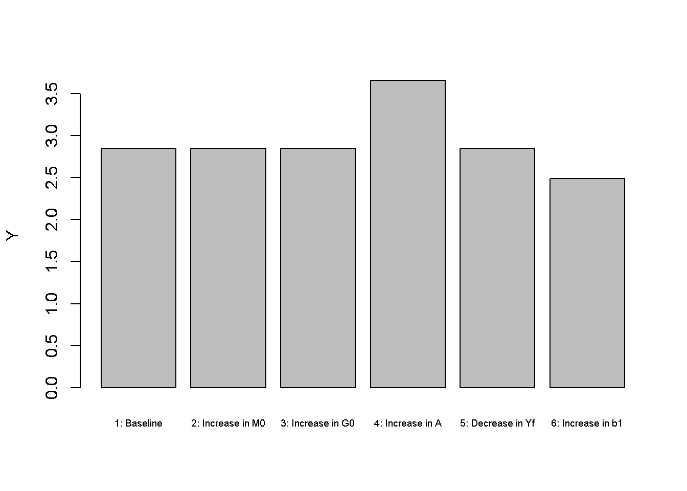
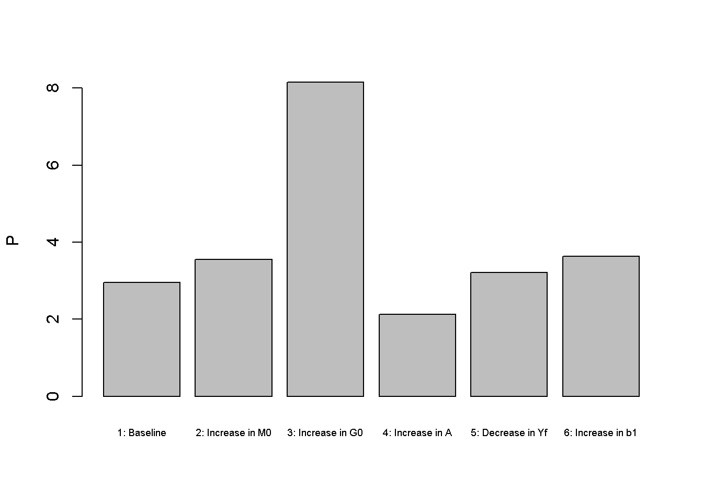
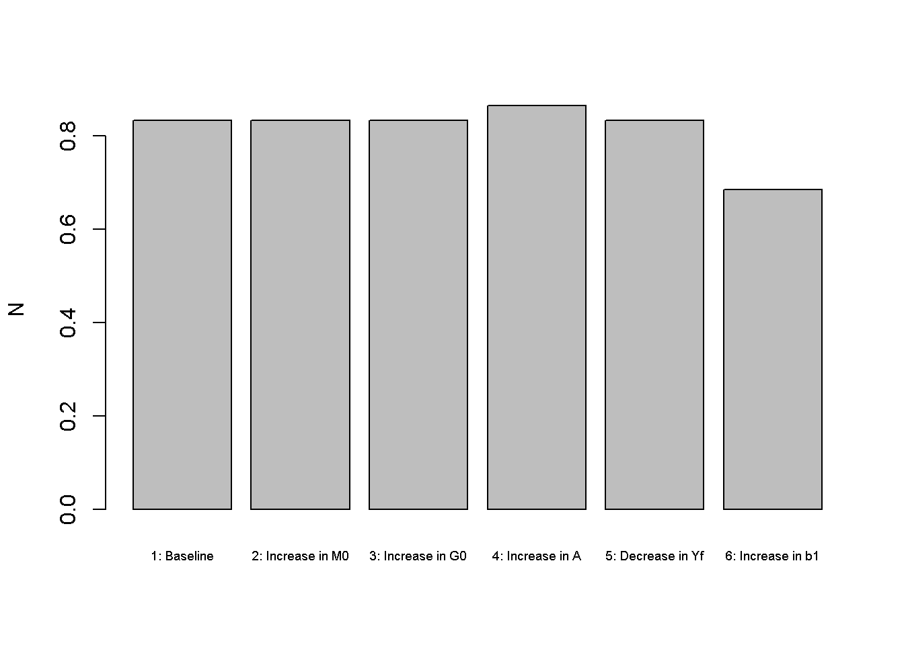
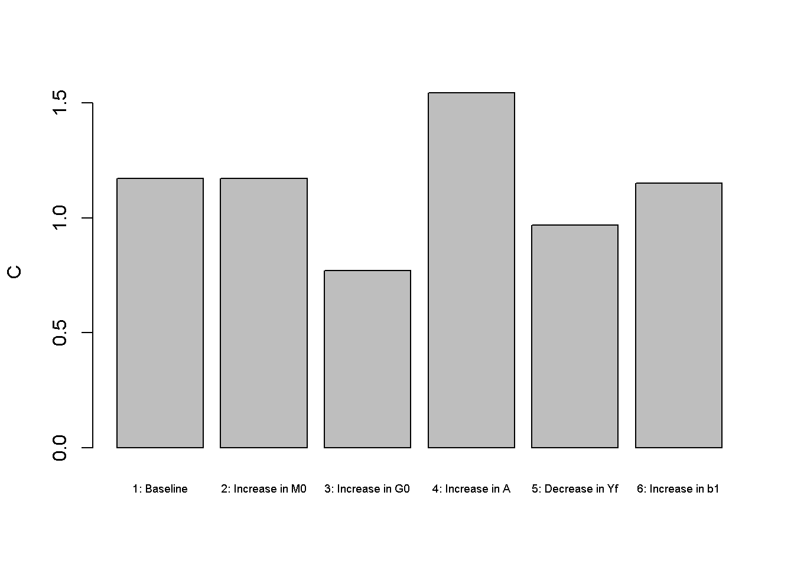
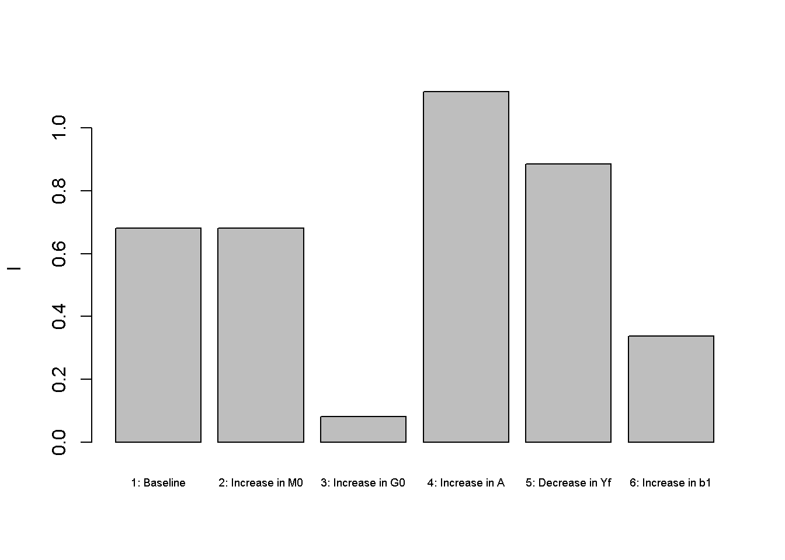
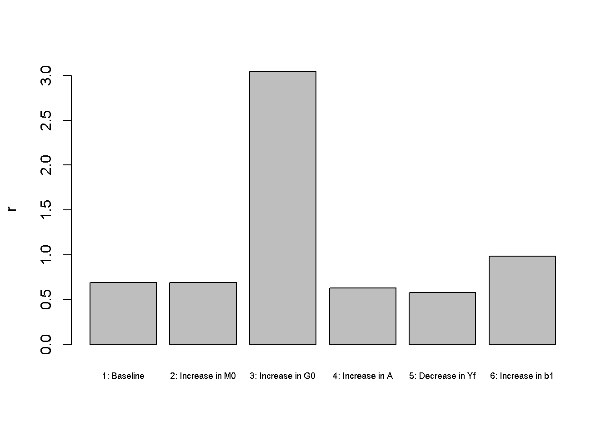

# Clear the environment
rm(list=ls(all=TRUE))
# Set number of scenarios (including baseline)
S=6
#Create vector in which equilibrium solutions from different parameterisations will be stored
Y_star=vector(length=S) # Income/output
w_star=vector(length=S) # Real wage
C_star=vector(length=S) # Consumption
I_star=vector(length=S) # Investment
r_star=vector(length=S) # Real interest rate
rn_star=vector(length=S) # Nominal interest rate
N_star=vector(length=S) # Employment
P_star=vector(length=S) # Price level
# Create and parameterise exogenous variables/parameters that will be shifted
M0=vector(length=S) # money supply
G0=vector(length=S) # government expenditures
A=vector(length=S) # productivity
Yf=vector(length=S) # expected future income
b1=vector(length=S) # household preference for leisure
M0[]=5
G0[]=1
A[]=2
Yf[]=1
b1[]=0.4
# Set parameter values for different scenarios
M0[2]=6 # scenario 2: monetary expansion
G0[3]=2 # scenario 3: fiscal expansion
A[4]=2.5 # scenario 4: productivity boost
Yf[5]=0.2 # scenario 5: lower expected future income
b1[6]=0.8 # scenario 6: increased preference for leisure
#Set constant parameter values
a=0.3 # Capital elasticity of output
b2=0.9 # discount rate
b3=0.6 # household preference for money
K=5 # Exogenous capital stock
pe=0.02 # Expected rate of inflation
Gf=1 # Future government spending
# Initialise endogenous variables at arbitrary positive value
w=1
C=1
I=1
Y=C+I
r=0.3
N=1.3
P=1
#Solve this system numerically through 1000 iterations based on the initialisation
for (i in 1:S){
for (iterations in 1:1000){
#Model equations
#(1) Cobb-Douglass production function
Y = A[i]*(K^a)*N^(1-a)
#(2) Labour demand
w = A[i]*(1-a)*(K^a)*N^(-a)
#(3) Labour supply
N = 1 - (b1[i])/w
#(4) Consumption demand
C = (1/(1+b2+b3))*(Y - G0[i] + (Yf[i]-Gf)/(1+r) -b1[i]*(b2+b3)*log(b1[i]/w))
#(5) Investment demand, solved for r
r=(I^(a-1))*a*A[i]*N^(1-a)
#(6) Goods market equilibrium condition, solved for I
I = Y - C - G0[i]
#(7) Nominal interest rate
rn = r + pe
#(8) Price level
P = (M0[i]*rn)/((1+rn)*b3*C)
}
#Save results for different parameterisations in vector
Y_star[i]=Y
w_star[i]=w
C_star[i]=C
I_star[i]=I
r_star[i]=r
N_star[i]=N
P_star[i]=P
rn_star[i]=rn
}3 A Neoclassical Macro Model
Overview
This model captures some key features of neoclassical macroeconomics. The model is based on the optimising behaviour of firms and households that interact in perfect markets. Households choose between labour and leisure as well as current and future consumption. They form (rational) expectations about their future income that impact their consumption decisions today. Firms are owned by households and maximise profits using a constant returns to scale technology (with diminishing marginal returns to factors of production). Markets are competitive and clear instantaneously through flexible prices. The most important market is the labour market, in which the equilibrium between firms’ demand and households’ supply of labour is established by a flexible real wage. The level of employment established on the labour market then determines aggregate supply via the production function. Aggregate demand always accommodates to aggregate supply via a flexible real interest rate that establishes an equilibrium between investment and saving (often interpreted as the market for loanable funds). The money supply is exogenous in this model and only impacts the price level but not the real economy – the so-called Classical Dichotomy (or neutrality of money). Government expenditures do influence the real economy but they crowd out private expenditures (through a mechanism called Ricardian Equivalence).
In this short- to medium-run version of the model, prices are flexible but the capital stock is fixed. The focus is thus on goods market equilibrium rather than economic growth. As all endogenous variables adjust instantaneously, the model is thus static. However, expectations about future income and government spending will impact current consumption of households that intertemporally maximise utility. The model is adapted from Garín, Lester, and Sims (2021).
The Model
\[ Y=AK^aN^{1-a}, \quad a\in (0,1) \tag{3.1}\]
\[ w=(1-a)AK^aN^{-a} \tag{3.2}\]
\[ N= 1-\frac{b_1}{w}, \quad b_1>0 \tag{3.3}\]
\[ C=\left(\frac{1}{1+b_2+b_3}\right)\left[Y- G +\frac{Y^f-G^f}{1+r} -b_1(b_2+b_3)\ln\left(\frac{b_1}{w}\right)\right], \quad b_2\in (0,1), b_3>0 \tag{3.4}\]
\[ I =\left(\frac{aAN^{1-a}}{r}\right)^{\frac{1}{1-a}} \tag{3.5}\]
\[ G= G_0 \tag{3.6}\]
\[ Y= C(r) + I(r) + G \tag{3.7}\]
\[ r_n= r + \pi^f \tag{3.8}\]
\[ M_s=M_0 \tag{3.9}\]
\[ M_d=\frac{b_3(1+r_n)PC}{r_n} \tag{3.10}\]
\[ M = M_d(P)= M_s \tag{3.11}\]
where \(Y\), \(K\), \(N\), \(w\), \(C\), \(G\), \(r\), \(I\), \(r_n\), \(\pi\), \(M_s\), \(M_d\), and \(P_t\) are real output, the capital stock, employment, the real wage, consumption, government expenditures, the real interest rate, investment, the nominal interest rate, inflation, the money supply, money demand, and the price level, respectively. The \(f\)-superscript denotes (expected) future values. For simplicity, expected future variables will be treated as exogenous.
By Equation 6.1, output is determined by a Cobb-Douglass production function with constant returns to scale and diminishing marginal returns to each factor (capital and labour). Equation 6.11 is the labour demand of firms solved for the real wage. Profit maximising firms will hire workers until the real wage is equal to the marginal product of labour (\(\frac{\partial Y}{\partial N}=(1-a)AK^aN^{-a}\)).1 Equation 6.12 specifies households’ labour supply, which is positively related to the real wage. By Equation 5.2 , consumption is positively related to current and (expected) future income,2 and negatively related to the real interest rate. This implies that for a higher real interest rate, households increase their saving (the supply of loanable funds). Furthermore, consumption is negatively related to current and future government expenditures. This is an implication of consumption smoothing: as households know that governments will have to repay its debts in the future through higher taxes, an increase in government expenditures today is perceived as an increase in taxes (regardless of whether the government finances its current expenditures through taxes or debt, a result that is also called ‘Ricardian Equivalence’).3 Equation 5.3 specifies investment as a negative function of the real interest rate and a positive function of productivity. By Equation 3.6, government expenditures are exogenous. Equation 3.7 is the goods market equilibrium condition, which pins down the equilibrium real interest rate through the market for loanable funds. Equation 3.8 specifies the nominal interest rate using the well-known Fisher equation. Equation 3.9 says that the money supply is exogenous. By Equation 3.10, households’ money demand is negatively related to the nominal interest rate and positively related to consumption (capturing the transaction demand for money). Finally, Equation 5.6 is the equilibrium condition for the money market, which pins down the price level.
Simulation
Parameterisation
Table 1 reports the parameterisation used in the simulation. Besides a baseline (labelled as scenario 1), five further scenarios will be considered. Scenarios 2 and 3 are a monetary expansion (increase in the exogenous money supply \(M_0\)) and fiscal expansion (increase in \(G_0\)), respectively. Scenario 4 is an improvement in total factor productivity (\(A\)) and scenario 5 a fall in expected future income (\(Y^f\)). Finally, scenario 6 is a shift in household preferences towards more leisure (\(b_1\)).
Table 1: Parameterisation
| Scenario | \(A\) | \(a\) | \(b_{1}\) | \(b_{2}\) | \(b_{3}\) | \(G_{0}\) | \(Y^{f}\) | \(M_{0}\) | \(K\) | \(\pi_{f}\) |
|---|---|---|---|---|---|---|---|---|---|---|
| 1: baseline | 2 | 0.3 | 0.4 | 0.9 | 0.6 | 1 | 1 | 5 | 5 | 0.02 |
| 2: monetary expansion (\(M_{0}\)) | 2 | 0.3 | 0.4 | 0.9 | 0.6 | 1 | 1 | 6 | 5 | 0.02 |
| 3: fiscal expansion (\(G_{0}\)) | 2 | 0.3 | 0.4 | 0.9 | 0.6 | 2 | 1 | 6 | 5 | 0.02 |
| 4: productivity boost (\(A\)) | 2.5 | 0.3 | 0.4 | 0.9 | 0.6 | 1 | 1 | 5 | 5 | 0.02 |
| 5: lower expected future income (\(Y^{f}\)) | 2 | 0.3 | 0.4 | 0.9 | 0.6 | 1 | 0.2 | 5 | 5 | 0.02 |
| 6: increased preference for leisure (\(b_{1}\)) | 2 | 0.3 | 0.8 | 0.9 | 0.6 | 1 | 1 | 5 | 5 | 0.02 |
Simulation code
Plots
Figures Figure 3.1 - Figure 3.3 depicts the model economy’s real activity under different scenarios. Monetary expansions (scenario 2) have no effects on output and employment, capturing the idea of money neutrality (Classical Dichotomy). However, the monetary expansion does raise the price level (see Figure 3.2 ), capturing the key idea of the Quantity Theory of Money that inflation is driven by a growing money supply.
barplot(Y_star, ylab="Y", names.arg=c("1: Baseline", "2: Increase in M0", "3: Increase in G0","4: Increase in A", "5: Decrease in Yf", "6: Increase in b1"), cex.names = 0.6)
barplot(P_star, ylab="P", names.arg=c("1: Baseline", "2: Increase in M0", "3: Increase in G0","4: Increase in A", "5: Decrease in Yf", "6: Increase in b1"), cex.names = 0.6)
An increase in government spending (by one unit) in scenario 3 does not raise employment and real output as these are fully determined by the supply side rather than aggregate demand.4 Looking at Figures Figure 3.4 and Figure 3.5, it can be seen that government spending crowds out private spending (consumption and investment). The decrease in consumption is a result of consumption smoothing via the Euler equation: the household anticipates higher taxes in the future and reduces current consumption somewhat to smooth out the impact. The increase in government expenditures also raises demand for loanable funds, which pushes up the real interest rate (see Figure 3.6) and reduces investment (Figure 3.5) and consumption. There is also an inflationary effect linked to the higher real interest rate, which raises the nominal interest rate and reduces the demand for money.
barplot(N_star, ylab="N", names.arg=c("1: Baseline", "2: Increase in M0", "3: Increase in G0","4: Increase in A", "5: Decrease in Yf", "6: Increase in b1"), cex.names = 0.6)
Improvements to the supply-side are captured by an increase in productivity (scenario 4), which raises real output, employment, and aggregate demand. In contrast to expansionary government policy, the price level falls.
barplot(C_star, ylab="C", names.arg=c("1: Baseline", "2: Increase in M0", "3: Increase in G0","4: Increase in A", "5: Decrease in Yf", "6: Increase in b1"), cex.names = 0.6)
barplot(I_star, ylab="I", names.arg=c("1: Baseline", "2: Increase in M0", "3: Increase in G0","4: Increase in A", "5: Decrease in Yf", "6: Increase in b1"), cex.names = 0.6)
A decrease in expected future income (scenario 5) has a small expansionary effect on aggregate output. This is because households will reduce some of their current consumption (see Figure 3.4 ) and supply more labour to smooth their consumption over time. The increase in saving reduces the real interest rate (see Figure 3.6 ) and is compensated by an increase in investment (see Figure 3.5 ).
barplot(r_star, ylab="r", names.arg=c("1: Baseline", "2: Increase in M0", "3: Increase in G0","4: Increase in A", "5: Decrease in Yf", "6: Increase in b1"), cex.names = 0.6)
Finally, an increase in the preference for leisure (scenario 6) reduces labour supply and thereby output.
Directed graph
Another perspective on the model’s properties is provided by its directed graph. A directed graph consists of a set of nodes that represent the variables of the model. Nodes are connected by directed edges. An edge directed from a node \(x_1\) to node \(x_2\) indicates a causal impact of \(x_1\) on \(x_2\).
## Create directed graph
# Construct auxiliary Jacobian matrix for 13 variables: Y w N C I r P rn M0 G0 A Yf Md
# where non-zero elements in regular Jacobian are set to 1 and zero elements are unchanged
M_mat=matrix(c(0,0,1,0,0,0,0,0,0,0,1,0,0,
0,0,1,0,0,0,0,0,0,0,1,0,0,
0,1,0,1,0,0,0,0,0,0,0,0,0,
1,0,0,0,0,1,0,0,0,1,0,1,0,
0,0,1,0,0,1,0,0,0,0,0,0,0,
1,0,0,1,1,0,0,0,0,1,0,0,0,
0,0,0,0,0,0,0,0,1,0,0,0,1,
0,0,0,0,0,1,0,0,0,0,0,0,0,
0,0,0,0,0,0,0,0,0,0,0,0,0,
0,0,0,0,0,0,0,0,0,0,0,0,0,
0,0,0,0,0,0,0,0,0,0,0,0,0,
0,0,0,0,0,0,0,0,0,0,0,0,0,
0,0,0,1,0,0,1,1,0,0,0,0,0), 13, 13, byrow=TRUE)
# Create adjacency matrix from transpose of auxiliary Jacobian
A_mat=t(M_mat)
# Create directed graph from adjacency matrix
library(igraph)
dg= graph_from_adjacency_matrix(A_mat, mode="directed", weighted= NULL)
# Define node labels
V(dg)$name=c("Y","w","N","C","I","r","P", expression(r[n]), expression(M[0]),expression(G[0]),"A",expression(Y^f), expression(M[d]))
# Plot directed graph
plot(dg, main="", vertex.size=20, vertex.color="lightblue",
vertex.label.color="black", edge.arrow.size=0.3, edge.width=1.1, edge.size=1.2,
edge.arrow.width=1.2, edge.color="black", vertex.label.cex=1.2,
vertex.frame.color="NA", margin=-0.08)
In Figure 3.7 , it can be seen that productivity (\(A\)), future income (\(Y^f\)), the money supply (\(M_0\)), and government spending (\(G_0\)) are the key exogenous variables of the model. All other variables are endogenous, and many of them form a closed loop (or cycle) within the system. The left part of the graph captures the supply side: the labour market simultaneously pins down the real wage and employment, which together with the exogenously level of productivity determine output. The part in the middle embodies the demand side: aggregate demand (consumption, investment, and government spending) together with a given level of output determine the real interest rate. The right part captures the nominal side of the model given by the money market, which determines the price level. Notably, while the real side of the model feeds into the money market via the nominal interest rate (\(r_n\)), there is not causal effect from the money market to the real side reflecting the Classical Dichotomy.
Analytical discussion: derivation of behavioural functions
The firm’s problem: profit maximisation
The firm’s profit equation is given by:
\[ \Pi=Y-w N-r k \tag{3.12}\]
\[ =A K^a N^{1-a}-w N-r k . \tag{3.13}\]
The firm’s optimisation problem is to maximise profits using employment and capital as choice variables:5
\[ \max _{N, K} \Pi=A K^a N^{1-a}-w N-r k . \tag{3.14}\]
The first-order conditions are given by:
\[ (1-a) A K^a N^{-a}-w=0 \tag{3.15}\]
\[ a A K^{a-1} N^{1-a}-r=0 . \tag{3.16}\]
From Equation 3.15, Equation 6.11 for labour demand can be derived. While the capital stock is pre-determined in every period, the firm can adjust the capital stock through investment. We thus use the first-order condition for capital Equation 3.16 to derive Equation 5.3 for investment demand.
The government’s budget constraint
The government’s current and future budget constraints are given by:
\[ G=T+B \tag{3.17}\]
\[ G^f=T^f+(1+r) B \tag{3.18}\] where \(T\) is tax revenues and \(B\) is government debt.
A crucial assumption here is that the government must repay its debts in the future (it cannot permanently roll over its debts). The underlying assumption is that the government will eventually `die’ and will do so without savings nor debts.
Combining the two budget constraints to an intertemporal budget constraint yields:
\[ G+\frac{G^f}{1+r}=T+\frac{T^f}{1+r} \tag{3.19}\]
Thus, while the government’s budget need not be balanced in every period, it will be balanced over time (in a present value sense).6
The household’s problem: intertemporal utility maximisation and Ricardian Equivalence
The household derives utility from current consumption, leisure (\(1-N\)), future consumption \(C^f\), and from holding real money balances \(\left(\frac{M}{P}\right)\). We use the following log utility function that is non-separable in consumption and leisure:7. Note also that for simplicity, the utility function omits the utility from future leisure.]
\[ U=\ln (C+ b_1 \ln (1-N))+b_2 \ln \left(C^f\right)+b_3 \ln \left(\frac{M}{P}\right) \tag{3.20}\]
The household’s current budget constraint is given by:8
\[ C=Y-T-S-\frac{M}{P} \tag{3.21}\]
The income that is not consumed can either be saved (\(S\)) at nominal interest rate (\(r_n\)) or held as money on which no return is earned.
The future budget constraint (assuming that households do not save in the future) is given by:
\[ C^f = Y^f - T^f + (1+r_n)\frac{PS}{P^f} + \frac{M}{P^f}. \tag{3.22}\]
Using the Fisher equation \((1+r)=(1+r_n)\frac{P}{P^f}\), the future budget constraint can be rewritten as:
\[ C^f = Y^f - T^f + (1+r)S + \frac{(1+r)M}{(1+r_n)P} \tag{3.23}\]
Finally, the two budget constraints can be combined to yield an intertemporal budget constraint:
\[ C^f = (Y-C-T)(1+r)+Y^f -T^f - (1+r)\frac{r_nM}{(1+r_n)P}. \tag{3.24}\]
Substituting the government’s intertemporal budget constraint, the household’s intertemporal budget constraint can also be written as:
\[ C^f = (Y-C-G)(1+r)+Y^f -G^f - (1+r)\frac{r_nM}{(1+r_n)P} \tag{3.25}\]
The fact that current and future tax payments are now replaced by current and future government spending means that it does not matter for the real economy how government spending is financed: the private sector will react to expenditures that are financed out of debt in the same way it reacts to expenditures financed out of taxation. This result is also known as Ricardian Equivalence. Put differently, Ricardian Equivalence means the household behaves as if the government balances its budget in every period.
With these ingredients, the household’s optimisation problem can be written as:
\[ \begin{array}{ll} \max _{C, N, M} & U=\ln (C+b_1 \ln (1-N))+b_2 \ln \left(C^f\right)+b_3 \ln \left(\frac{M}{P}\right), \\ \text { s.t. } & C^f= (Y-C-G)(1+r)+Y^f -G^f - (1+r)\frac{r_nM}{(1+r_n)P} . \end{array} \]
Substituting the constraint Equation 3.25 for \(C^f\) in the utility function, and making use of the identity \(Y=\Pi+rK+Nw\), allows to obtain the following first-order conditions:
\[ C=\frac{C^f}{b_2(1+r)} - b_1\ln(1-N) \tag{3.26}\]
\[ \left(\frac{b_1}{1-N}\right)\left(\frac{1}{C+b_1\ln(1-N)} \right)=\frac{b_2(1+r)w}{C^f} \tag{3.27}\]
\[ M=\frac{b_3PC^f(1+r_n)}{b_2(1+r)r_n} . \tag{3.28}\]
Substituting Equation 3.26, which is often also called the Euler equation, into Equation 3.27 and Equation 3.28 yields Equation 6.12 for labour supply and Equation 3.10 for money demand, respectively. Finally, using Equation 3.25 and Equation 3.28 in the Euler Equation 3.26 yields the consumption function Equation 5.2.
References
Garín, Julio, Robert Lester, and Eric Sims. 2021. Intermediate Macroeconomics. Draft Version 3.0.1. https://juliogarin.com/files/textbook/GLS_Intermediate_Macro.pdf.
See the analytical discussion below for a derivation of equations Equation 6.11 -Equation 5.3 and Equation 3.10 from optimising microfoundations.↩︎
Households are assumed to form rational expectations. In a deterministic setting, this implies perfect foresight so that expected and actual future income coincide.↩︎
See the analytical discussion below for more details on Ricardian Equivalence.↩︎
This result is partly driven by the use of a non-separable utility function, see analytical discussion below. With a separable utility function, the increase in government spending would increase labour supply and thereby have effects on employment and output.↩︎
See Garín, Lester, and Sims (2021, chap. 12) for a more elaborate version where the firm maximises its lifetime value. The resulting investment function is very similar.↩︎
See Garín, Lester, and Sims (2021, chap. 13) for a more detailed discussion of the government’s budget constraints.↩︎
See Garín, Lester, and Sims (2021), pp.280-289), on the difference between a separable and a non-separable preference specification↩︎
See Garín, Lester, and Sims (2021, chap. 14) for a more detailed discussion of the household’s budget constraints.↩︎